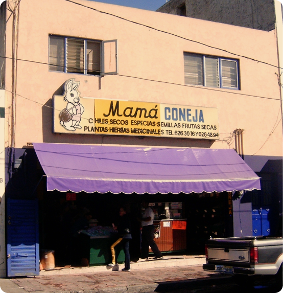
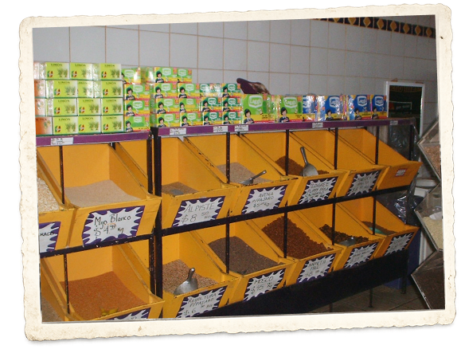
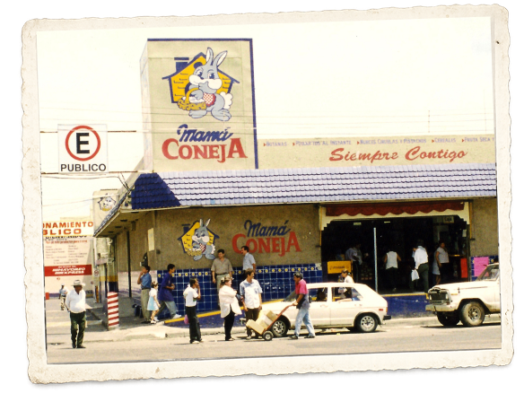
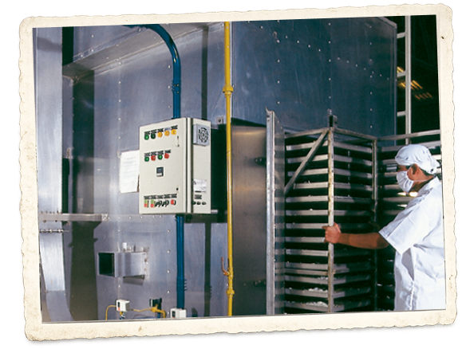
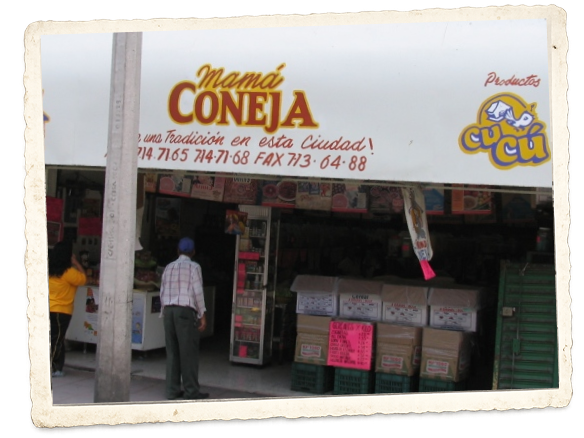
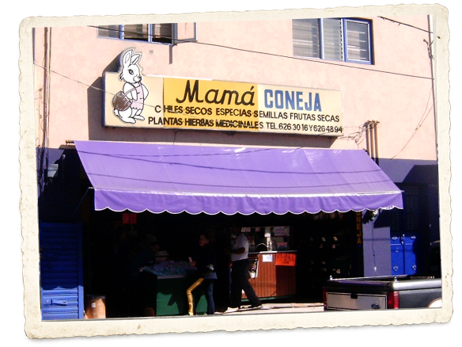
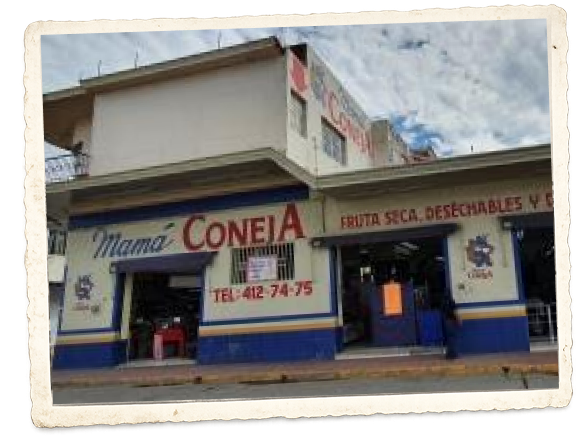
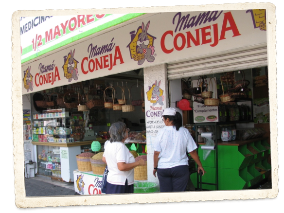
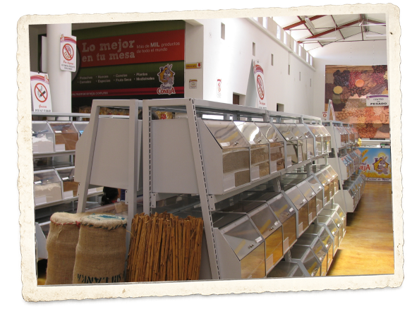
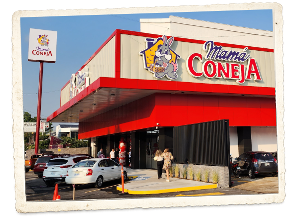

A finales de la década de los años 50, se inaugura la tienda de la calle Santa Mónica, detrás del Mercado Corona de Guadalajara, marcando el inicio de la historia de Mamá Coneja.

Apertura de la sucursal en el Mercado de Abastos, expandiendo la marca al principal centro de distribución de alimentos del estado.

Se establece la procesadora y empacadora de alimentos, enfocada en la distribucion a nivel mayoreo de botanas, semillas, consomés, alimentos, sazonadores, que se comercializan bajo el nombre Productos Cucú.

Abre la sucursal en León, Gto., expandiendo la presencia de Mamá Coneja hacia el Bajío y sus alrededores para alcanzar esta importante zona del país.

Inicia labores la sucursal en Santa Tere en uno de los barrios más tradicionales de Guadalajara.

Abre sus puertas la primera de las 5 sucursales en Cd. Guzmán, Jalisco, un punto estratégico en el sur del estado de Jalisco.

Se funda la sucursal en San Juan Bosco, un barrio tradicional con una rica historia y cultura que nos permite alcanzar la zona oriente de Guadalajara.

Comienza a operar la sucursal en Sayula para atender a esa importante zona agrícola del estado.

Apertura de la sucursal en Tamazula, llevando los productos de Mamá Coneja a esta relevante localidad del sur de Jalisco.
Te agradecemos en nombre de Mamá Coneja, el apoyo valiosísimo y la protección que nos has brindado desde nuestros comienzos hace más de 50 años, y que continuas brindándonos cada día.
En Tí, Señor, esta empresa no podría desarrollarse ni superar los retos que día con día enfrenta.
No te alejes jamás de nosotros. Dígnate bendecir nuestro Trabajo y a nuestras Familias, y abre Nuestro Corazón a Tí.
Te lo pedimos por Santa María y por tu infinita Misericordia, Señor. ¡Gloria a Dios!